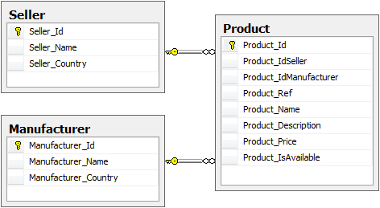
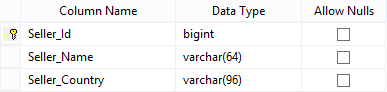
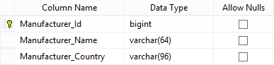
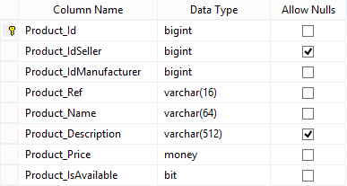

This HowTo explains how to used the generated search method and how to implement a custom one.
Here the database schema used in these examples.
   LayerCake Generator generates Search methods that take a SearchOptions parameter.
using (var service = new ServiceProxy<IProductService>()) { SearchOptions options = new SearchOptions(); // Retrieve the Products where IsAvailable == true... options.Filters.Add(Product.ColumnNames.IsAvailable, FilterOperator.Equals, true); TCollection<Product> collection = service.Proxy.Search(ClientContext.Anonymous, ref options); }
using (var service = new ServiceProxy<IProductService>()) { SearchOptions options = new SearchOptions(); // Retrieve the Products where IsAvailable == true... options.Filters.Add(Product.ColumnNames.IsAvailable, FilterOperator.Equals, true); // Retrieve 2 records max... options.MaxRecords = 2; TCollection<Product> collection = service.Proxy.Search(ClientContext.Anonymous, ref options); // Here we are using MaxRecords limitation. // Thus collection.Count <= options.PagingOptions.TotalRecords Assert.IsTrue(collection.Count <= 2); }
using (var service = new ServiceProxy<IProductService>()) { SearchOptions options = new SearchOptions(); // Retrieve the Products where IsAvailable == true... options.Filters.Add(Product.ColumnNames.IsAvailable, FilterOperator.Equals, true); // Retrieve the first page with 5 items max... options.WithPaging = true; // default value is false. options.PagingOptions.CurrentPage = 1; options.PagingOptions.RecordsPerPage = 5; TCollection<Product> collection = service.Proxy.Search(ClientContext.Anonymous, ref options); // Here we are using WithPaging option. // Thus collection.Count <= options.PagingOptions.TotalRecords Assert.IsTrue(collection.Count <= 5); Assert.IsTrue(collection.Count <= options.PagingOptions.TotalRecords); }
Full-text search allows fast and flexible indexing for keyword-based query of text data stored in a Microsoft SQL Server database. In contrast to the LIKE predicate, which only works on character patterns, full-text queries perform linguistic searches against this data, by operating on words and phrases based on rules of a particular language. To know more about this feature report to the MSDN.
using (var service = new ServiceProxy<IProductService>()) { SearchOptions options = new SearchOptions(); options.Filters.Add(Product.ColumnNames.Name, FilterOperator.Contains, "htc"); TCollection<Product> collection = service.Proxy.Search(ClientContext.Anonymous, ref options); options = new SearchOptions(); options.Filters.Add(Product.ColumnNames.Name, FilterOperator.Contains, "htc 8x"); // transform to "htc AND 8x" collection = service.Proxy.Search(ClientContext.Anonymous, ref options); options = new SearchOptions(); options.Filters.Add(Product.ColumnNames.Name, FilterOperator.Contains, "htc AND 8x"); collection = service.Proxy.Search(ClientContext.Anonymous, ref options); options = new SearchOptions(); options.Filters.Add(Product.ColumnNames.Name, FilterOperator.Contains, "htc OR nokia"); collection = service.Proxy.Search(ClientContext.Anonymous, ref options); options = new SearchOptions(); options.Filters.Add("*" /* == (Product_Name, Product_Description) */, FilterOperator.Contains, "(windows AND phone) OR wp"); collection = service.Proxy.Search(ClientContext.Anonymous, ref options); }
The GlobalSearch method executes the search operation (1 keyword) on all the tables of the database (with paging).
// GlobalSearch excludes the following tables: // AppSettings, ExecutionTrace, ProcessErrorLog, ProcessLog, Role, Translation, User, UserRole using (var service = new ServiceProxy<ICommonService>()) { // 1° page with 10 first records. PagingOptions paging = new PagingOptions { CurrentPage = 1, RecordsPerPage = 10 }; IList<GlobalSearchResultItem> results = service.Proxy.GlobalSearch(ClientContext.Anonymous, "Bike", ref paging); if (paging.TotalRecords > 10) { // 2° page with 10 next records. paging.CurrentPage = 2; // Executes the search operation on all the database tables... results = service.Proxy.GlobalSearch(ClientContext.Anonymous, "Bike", ref paging); } // Executes the search operation on given tables... //results = service.Proxy.GlobalSearch(ClientContext.Anonymous, "Bike", paging, new List<string> { "Product", ... }); }
GlobalSearchResultItem = { TableName, ColumnName, Id, Value }
Suppose we want to write a method that retrieves Product records with Manufacturers and Sellers associations given several criterias.
We could write the following Business method.
// Business | ProductBusiness.custom.cs [BusinessMethod] public TCollection<Product> SearchByCriterias( IUserContext userContext, string searchText, long? idSeller, long? IdManufacturer, string sellerName, string manufacturerName, bool? isAvailable, double? minPrice, double? maxPrice) { // ... }
But this design is quite bad. Too many parameters.
The best practice is to create a criteria class and to inherit the SearchCriterias class.
// Models | Com.Example.Labs.Models\Models\SearchCriterias\ProductSearchCriterias.cs namespace Com.Example.Labs.Models { using System; using System.Collections.Generic; using System.ComponentModel; using System.Runtime.Serialization; using Com.Example.Labs.Core; [Serializable] [DataContract(Namespace = Globals.Namespace, IsReference = true)] public class ProductSearchCriterias : SearchCriterias { [DataMember] [CriteriaMember("@SearchText", isFullTextSearch: true /* automatically formatted */)] public string SearchText // Product_Name, Product_Description { get; set; } [DataMember] [CriteriaMember("@IdSeller")] public long? IdSeller { get; set; } [DataMember] [CriteriaMember("@IdManufacturer")] public long? IdManufacturer { get; set; } [DataMember] [CriteriaMember("@SellerName")] public string SellerName { get; set; } [DataMember] [CriteriaMember("@ManufacturerName")] public string ManufacturerName { get; set; } [DataMember] [CriteriaMember("@IsAvailable")] public bool? IsAvailable { get; set; } [DataMember] [CriteriaMember("@MinPrice")] public double? MinPrice { get; set; } [DataMember] [CriteriaMember("@MaxPrice")] public double? MaxPrice { get; set; } } }
To set a default value on a property use the DefaultValue attribute (or in the constructor).
[DataMember] [CriteriaMember("@IsAvailable")] [DefaultValue(true)] public bool? IsAvailable { get; set; }
Then the Business method can be simplified like this.
// Business | ProductBusiness.custom.cs [BusinessMethod] public TCollection<Product> SearchByCriterias(IUserContext userContext, ref ProductSearchCriterias criterias) { using (var et = new ExecutionTracerService()) using (var db = new ProductCrud(userContext)) { return db.SearchByCriterias(criterias); } }
CRUD method.
// Crud | ProductCrud.custom.cs namespace Com.Example.Labs.Crud { using System; using System.Collections.Generic; using System.Data; using System.Data.Common; using System.Linq; using System.Transactions; using Com.Example.Labs.Models; public partial class ProductCrud { public TCollection<Product> SearchByCriterias(ProductSearchCriterias criterias) { TCollection<Product> collection = null; using (var et = new ExecutionTracerService()) { DbConnection dbConnection; using (var dbReader = base.ToDataReader( "Product_Custom_SearchWithCriterias", criterias.ToParameters(), out dbConnection)) { collection = this.DeepMap(dbReader) as TCollection<Models.Product>; dbReader.NextResult(); dbReader.Read(); criterias.PagingOptions.TotalRecords = Convert.ToInt32(dbReader[0]); } if (dbConnection != null) dbConnection.Close(); } return collection; } } }
The custom stored procedure.
CREATE PROCEDURE [dbo].[Product_Custom_SearchWithCriterias] ( -- Filters parameters @SearchText VARCHAR(128) = NULL, @IdSeller BIGINT = NULL, @IdManufacturer BIGINT = NULL, @SellerName VARCHAR(64) = NULL, @ManufacturerName VARCHAR(64) = NULL, @IsAvailable BIT = NULL, @MinPrice FLOAT = NULL, @MaxPrice FLOAT = NULL, -- Pagination parameters @PagingCurrentPage INT = 1, @PagingRecordsPerPage INT = 50, -- Context parameters (not used here) @CtxUser BIGINT = NULL, @CtxCulture VARCHAR(2) = N'EN', @CtxWithContextSecurity BIT = N'True' ) WITH RECOMPILE AS BEGIN SET NOCOUNT ON DECLARE @Statement_Data NVARCHAR(MAX), @Parameters_Data NVARCHAR(MAX); DECLARE @Statement_TotalRecords NVARCHAR(MAX), @Parameters_TotalRecords NVARCHAR(MAX); IF @PagingCurrentPage IS NULL OR @PagingCurrentPage < 1 SET @PagingCurrentPage = 1; IF @PagingRecordsPerPage IS NULL OR @PagingRecordsPerPage < 1 SET @PagingRecordsPerPage = 50; DECLARE @v_LastRow INT = @PagingCurrentPage * @PagingRecordsPerPage; DECLARE @v_FirstRow INT = @v_LastRow - @PagingRecordsPerPage + 1; BEGIN TRY -- SELECT section... SET @Statement_Data = N' [Product].*,' + N' [Seller].*,' + N' [Manufacturer].*' SET @Statement_TotalRecords = N' SELECT COUNT(0) AS TotalRecords' -- FROM section... DECLARE @v_From VARCHAR(MAX) = N' FROM' + N' [Product] WITH(NOLOCK)' + N' LEFT JOIN [Seller] WITH(NOLOCK) ON [Seller].[Seller_Id] = [Product].[Product_IdSeller]' + N' INNER JOIN [Manufacturer] WITH(NOLOCK) ON [Manufacturer].[Manufacturer_Id] = [Product].[Product_IdManufacturer]' SET @Statement_Data += @v_From SET @Statement_TotalRecords += @v_From -- WHERE section... DECLARE @v_Where VARCHAR(MAX) = N' WHERE' + N' 1 = 1' IF @SearchText IS NOT NULL BEGIN -- Full-Text Search filter SET @v_Where += N' AND CONTAINS(([Product].[Product_Name], [Product].[Product_Description]), @SearchText)' END IF @IdSeller IS NOT NULL BEGIN SET @v_Where += N' AND [Product].[Product_IdSeller] = @IdSeller' END IF @IdManufacturer IS NOT NULL BEGIN SET @v_Where += N' AND [Product].[Product_IdManufacturer] = @IdManufacturer' END IF @SellerName IS NOT NULL BEGIN SET @v_Where += N' AND [Seller].[Seller_Name] = @SellerName' END IF @ManufacturerName IS NOT NULL BEGIN SET @v_Where += N' AND [Manufacturer].[Manufacturer_Name] = @ManufacturerName' END IF @IsAvailable IS NOT NULL BEGIN SET @v_Where += N' AND [Product].[Product_IsAvailable] = @IsAvailable' END IF @MinPrice IS NOT NULL OR @MaxPrice IS NOT NULL BEGIN IF @MinPrice IS NOT NULL AND @MaxPrice IS NOT NULL BEGIN SET @v_Where += N' AND [Product].[Product_Price] >= @MinPrice AND [Product].[Product_Price] <= @MaxPrice' END ELSE IF @MinPrice IS NOT NULL BEGIN SET @v_Where += N' AND [Product].[Product_Price] >= @MinPrice' END ELSE IF @MaxPrice IS NOT NULL BEGIN SET @v_Where += N' AND [Product].[Product_Price] <= @MaxPrice' END END SET @Statement_Data += @v_Where SET @Statement_TotalRecords += @v_Where -- CTE section (with ORDER BY - if not required use [Product].[Product_Id])... SET @Statement_Data = N' ;WITH PagedRows AS (' + N' SELECT ROW_NUMBER() OVER (ORDER BY [Product].[Product_Price]) AS RowNumber,' + @Statement_Data + N' ) SELECT * FROM PagedRows WITH(NOLOCK) WHERE RowNumber BETWEEN ' + CONVERT(VARCHAR(12), @v_FirstRow) + ' AND ' + CONVERT(VARCHAR(12), @v_LastRow) -- Parameters... SET @Parameters_Data = N'@SearchText VARCHAR(128), @IdSeller BIGINT, @IdManufacturer BIGINT, @SellerName VARCHAR(64), @ManufacturerName VARCHAR(64), @IsAvailable BIT, @MinPrice FLOAT, @MaxPrice FLOAT' SET @Parameters_TotalRecords = N'@SearchText VARCHAR(128), @IdSeller BIGINT, @IdManufacturer BIGINT, @SellerName VARCHAR(64), @ManufacturerName VARCHAR(64), @IsAvailable BIT, @MinPrice FLOAT, @MaxPrice FLOAT' --PRINT N'DEBUG, @Statement_Data = ' + @Statement_Data --PRINT N'DEBUG, @Statement_TotalRecords = ' + @Statement_TotalRecords -- Execute requests... EXEC sp_executesql @Statement_Data, @Parameters_Data, @SearchText, @IdSeller, @IdManufacturer, @SellerName, @ManufacturerName, @IsAvailable, @MinPrice, @MaxPrice; EXEC sp_executesql @Statement_TotalRecords, @Parameters_TotalRecords, @SearchText, @IdSeller, @IdManufacturer, @SellerName, @ManufacturerName, @IsAvailable, @MinPrice, @MaxPrice; END TRY BEGIN CATCH -- This section is really important to track (ProcessErrorLog table) -- bad dynamic requests! DECLARE @V_NOW DATETIME2(3) = GETDATE(); DECLARE @V_ERROR_MESSAGE VARCHAR(MAX) = @Statement_Data + N' ->' + ERROR_MESSAGE(); DECLARE @V_ERROR_SEVERITY INT = ERROR_SEVERITY(); DECLARE @V_ERROR_STATE INT = ERROR_STATE(); EXEC [ProcessErrorLog_Save] @ProcessErrorLog_Date = @V_NOW, @ProcessErrorLog_ProcedureName = N'Product_Custom_SearchWithCriterias', @ProcessErrorLog_ErrorMessage = @V_ERROR_MESSAGE, @ProcessErrorLog_ErrorSeverity = @V_ERROR_SEVERITY, @ProcessErrorLog_ErrorState = @V_ERROR_STATE, @ProcessErrorLog_Data = @Statement_Data, @CtxUser = @CtxUser, @CtxCulture = @CtxCulture, @CtxWithContextSecurity = @CtxWithContextSecurity; RAISERROR(@V_ERROR_MESSAGE, @V_ERROR_SEVERITY, @V_ERROR_STATE); RETURN; END CATCH END
And finally a simple Unit Test.
// Tests using (var service = new ServiceProxy<IProductService>()) { var criterias = new ProductSearchCriterias { SellerName = "Seller_1" }; criterias.PagingOptions.CurrentPage = 1; // Get the 1° page criterias.PagingOptions.RecordsPerPage = 3; // Get 3 items TCollection<Product> products = service.Proxy.SearchByCriterias(ClientContext.Anonymous, ref criterias); if (criterias.PagingOptions.TotalRecords > 3) { criterias.PagingOptions.CurrentPage = 2; // Get next page products = service.Proxy.SearchByCriterias(ClientContext.Anonymous, ref criterias); } }